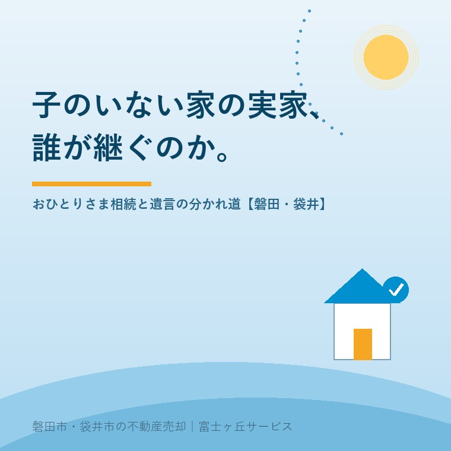

2026年7月23日｜カテゴリ：相続・遺言・空き家予防

この記事の要点
Q. 子どもがいない私たち夫婦。この家は将来どうなってしまう？
A. 遺言がない場合、家は配偶者と、亡くなった方の兄弟姉妹（亡くなっていれば甥・姪）との共同相続になり、話し合いがまとまらず空き家になりやすい形です。兄弟姉妹には遺留分がないため、遺言を残しておけば家を配偶者など渡したい人に確実に渡せます。磐田市・袋井市では、介護施設の運営から不動産事業を始めた富士ヶ丘サービスのような「介護×不動産」専門の会社に、住まいの行き先も含めて相談するという選択肢があります。
「うちは子どもがいないから、相続は関係ない」──ご相談の場でときどき耳にする言葉ですが、実は逆です。子どものいないご夫婦やおひとりさまの家こそ、相続の行き先が複雑になりやすく、何も準備がないと空き家への道をたどりがちです。団塊の世代の方々が全員75歳以上となり、「大相続時代」と呼ばれる時期に入った今、国土交通省の調査でも空き家を取得した経緯の54.6％は相続です。今日は、子どものいない家の相続で何が起きるのか、そして「遺言」がなぜ効くのかを整理します。
民法は相続人の順位を次のように定めています。配偶者は常に相続人で、それに加えて順位の高い人が相続人になります。
| 順位 | 相続人 | 子どものいない夫婦の例（配偶者がいる場合の取り分） |
|---|---|---|
| 第1順位 | 子（亡くなっていれば孫） | ─（いない） |
| 第2順位 | 父母など直系尊属 | 配偶者2/3・父母1/3 |
| 第3順位 | 兄弟姉妹（亡くなっていれば甥・姪） | 配偶者3/4・兄弟姉妹1/4 |
子どものいないご夫婦で、すでにご両親も他界している場合、相続人は「配偶者＋亡くなった方の兄弟姉妹」です。兄弟姉妹が先に亡くなっていれば、その子ども（甥・姪）が代わりに相続人になります（代襲は一代限り）。つまり、長年ふたりで暮らしてきた自宅の名義変更や売却に、義理のきょうだいや甥・姪の協力（実印と印鑑証明）が必要になるのです。おひとりさまの場合は、配偶者がいない分、兄弟姉妹・甥姪だけでの遺産分割になります。
この形の相続が空き家を生みやすい理由は、はっきりしています。
「誰も住まない・誰も決められない・誰も動けない」の三拍子がそろいやすい──これが、子のいない家の相続が空き家の入口になりやすい理由です。
ここで大きな意味を持つのが遺言です。相続人には最低限の取り分（遺留分）が保障されていますが、民法上、遺留分があるのは兄弟姉妹以外の相続人だけです。つまり、子どものいないご夫婦なら、「自宅を含む全財産を配偶者に相続させる」という遺言を残しておけば、兄弟姉妹や甥姪から取り分を請求されることはなく、配偶者に確実に渡せます。おひとりさまなら、お世話になった人や特定の甥姪、団体への遺贈も遺言で決められます。
遺言には、公証役場で作る公正証書遺言のほか、自分で書く自筆証書遺言もあります。自筆証書遺言は2020年から法務局で保管してもらえる制度（自筆証書遺言書保管制度）が始まっており、紛失・改ざんの心配がなく、家庭裁判所の検認も不要になりました。磐田市の場合は静岡地方法務局磐田支局が窓口です。
相続人が誰もいない場合、家庭裁判所が選任する相続財産清算人が財産を清算し、特別縁故者への分与などを経て、残った財産は国庫に納められます。最高裁判所の調べでは、こうして国庫に納付された「相続人なき遺産」は2024年度に約1,292億円と過去最多で、記録のある2013年度の4倍近くに増えています。身寄りのない高齢者の増加が背景にあり、これは全国的な流れです。
「最後は国のものになるなら、それでいい」という考え方ももちろんあります。ただ、国庫に至るまでの間、家は長く空き家のまま放置されがちで、ご近所に負担をかけることもあります。元気なうちに住まいの行き先を自分で決めておく──遺言で渡す先を決める、住み替えて自宅は売却し現金で整理しておく、といった準備は、残される人と地域への思いやりでもあります。
磐田市・袋井市でも、単身の高齢者世帯やご夫婦のみの世帯は増え続けています。この地域の家は敷地が広く、庭木や物置、農地が付いていることも多いため、遠方の甥姪が相続してから処分しようとすると、片付けも売却も大仕事になります。将来売りにくい要素（未登記の離れ、境界未確定、農地など）があるなら、ご本人が元気なうちに整理しておくほうが、手間も費用も小さく済みます。売りにくい土地の行き先として、相続土地国庫帰属制度の実情はこちらの記事で解説しています。
そして何より、子どものいない方の相続準備は「誰に相談するか」から始まります。当社は介護施設の運営から不動産事業を始めた会社なので、介護費用の見通し、施設入居のタイミング、住まいの売却や住み替え、遺言が必要かどうかの入口整理まで、ひとつのテーブルでお話しいただけます。遺言書の作成そのものは提携の専門家（司法書士・行政書士等）へおつなぎし、不動産の現状整理は当社が地域密着でお手伝いします。
富士ヶ丘サービスは、磐田市・袋井市に特化した地域密着の会社として、「高く売る」だけでなく「家族と地域があとで困らない住まいのしまい方」を大切にしています。おひとりさま・お子さまのいないご夫婦の住まいのご相談は、相続はじめ相談室からどうぞ。
ふじがおか実家カルテ｜遺言を考える前の現状確認に
ご自宅の名義・境界・農地・売りやすさを、まず1冊に。
登記情報と固定資産税通知書から、将来の手続きで支障になりそうな点を宅建士が机上で確認します。相続はじめ相談室・実家じまい相談室もあわせてご利用ください。
本記事は2026年7月23日時点の情報をもとに作成しています。相続人の範囲・遺留分・遺言の方式などの個別判断は弁護士・司法書士・法務局へ、相続税（2割加算を含む）は税理士・税務署へご確認ください。
磐田市・袋井市の実家じまい・相続空き家相談
固定資産税通知書だけでも相談できます
住所があいまいでも、通知書や写真から名義・道路・農地・残置物の確認順を整理します。カルテ申込またはLINEで状況を送ってください。
富士ヶ丘サービス株式会社／静岡県磐田市見付5789番地1／TEL:0538-31-3308／静岡県知事 (2) 第14083号／代表取締役・宅地建物取引士 大石 浩之